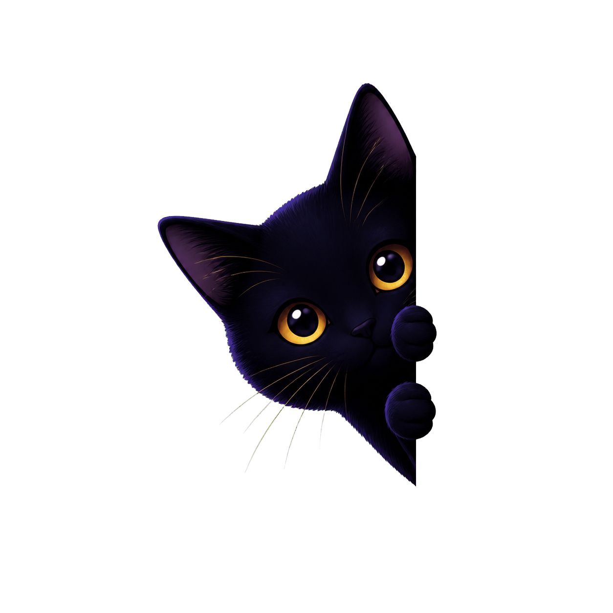

☰
診断
派遣猫鑑定
会員証メーカー
NNNとは
監視報告書
派遣候補通知
TOP SECRET

LOCK-ON CHECK
ロックオン診断
該当する項目にチェックしてください。猫の視線は、思ったより正確です。
✦ 🐾
MISSION CHECKLIST
🐾 ✦
MISSION
01
最近、道端の猫とよく目が合う
MISSION
02
猫動画を見始めると止まらない
MISSION
03
猫に話しかけるのが自然になっている
MISSION
04
飼う予定はないのに猫用品を見てしまう
MISSION
05
ベランダや玄関に猫が来たことがある
MISSION
06
猫の写真フォルダが増えすぎている
MISSION
07
猫に生活を支配されても少しうれしい
MISSION
08
自分はNNNに見られている気がする
監視結果を確認
CHECK REPORT